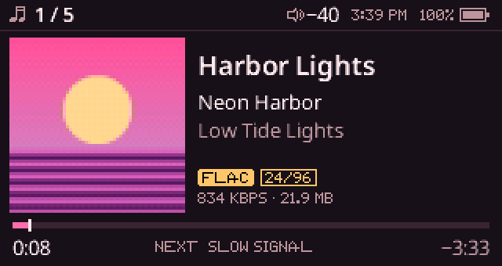
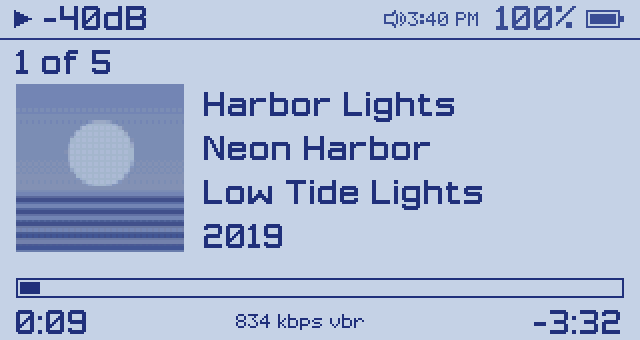
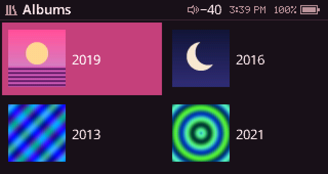
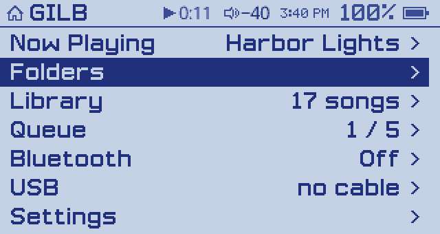

Custom firmware · SNOWSKY (FiiO) Echo Mini
Your Echo Mini,
rebuilt from the boot up.
GILB is free, from-source firmware for both of the player's cores: a music library with albums, artists and years, lyrics, a spectrum, themes and layouts you can make yourself, and two Looks, Modern and Retro.
Download the latest firmware



Download
Looking for the latest release…
Which board do I have?
The Echo Mini comes in two boards. The stock update file for yours is named
HIFIEC…IMG on the 8 GB board and MINIV…IMG on the 512 MB board.
With GILB already installed: Settings › System › About shows the board.
Install
- Connect the player by USB and pick USB disk (on stock: it shows up as a drive).
- Copy the
.IMGfor your board to the root of the player's internal storage. Remove the microSD card. - Eject the drive and confirm on the player. Stock's updater takes it the first time; after that GILB's own shows the file's SHA-256 and PLAY installs it.
Keep the stock firmware at hand. Flashing modified firmware is at your own risk. Stock goes back the same way, and a player that does not start can be recovered over USB: recovery guide.
Music with Japanese, Chinese or Korean titles? Also download CJK.BIN from the release and copy it
into the GILB folder on the player. Without it those titles show placeholder characters; everything else works.
(Its glyphs: Fusion Pixel, SIL OFL 1.1.)
Coming from ReChord? Install GILB over it as any update; your library, playlists and settings carry over.
Support
GILB is free. If it's useful to you, these are the people to thank.
Atzkey
Creator of RECHO, the first custom firmware for the Echo Mini, which made all of this possible.
Support Atzkey on Ko-fi